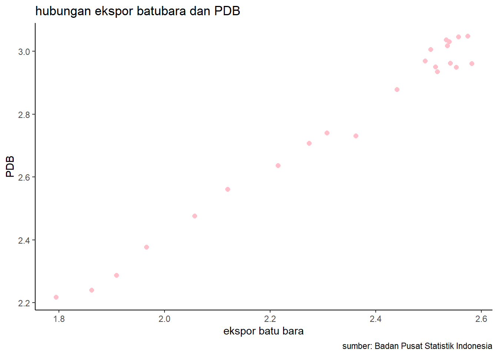

library(tidyverse)
library(readxl)
library(writexl)
library(dplyr)Pengaruh Ekspor Batu Bara terhadap PDB Indonesia Tahun 2000 Hingga 2022
Metode Penelitian Politeknik APP Jakarta

1 Pendahuluan
1.1 Latar belakang
Indonesia merupakan salah satu produsen batu bara terbesar di dunia dengan cadangan yang melimpah. Ekspor batu bara telah menjadi salah satu sumber pendapatan utama bagi Indonesia dan memainkan peran penting dalam pertumbuhan ekonomi negara. Perlu diketahui bahwa Batu bara merupakan sumber daya energi utama di Indonesia dan telah digunakan dalam sektor industri, pembangkit listrik, dan keperluan domestik lainnya. Konsumsi batu bara di dalam negeri dan ekspor batu bara memberikan kontribusi yang signifikan terhadap keberlanjutan sektor energi Indonesia.
Dari tahun 2000 hingga 2022, ekspor batu bara Indonesia mengalami perkembangan yang signifikan, dengan peningkatan volume dan nilai ekspor. Ini di buktikan berdasarkan Permintaan global terhadap batu bara, terutama dari negara-negara seperti Tiongkok dan India, yang telah menjadi faktor utama dalam meningkatnya ekspor batu bara Indonesia dan ini menyebabkan Ekspor batu bara memberikan kontribusi signifikan terhadap Produk Domestik Bruto (PDB) Indonesia.
1.2 Ruang lingkup
Dalam penelitian ini Peneliti menggunakan objek data yang di ambil melalui Badan Pusat Statistik ( BPS ) berupa data Ekspor batubara dan PDB. Terdapat satu variable independen berupa ekspor batubara dan satu variable dependen berupa PDB Indonesia. Penelitian ini bersifat time series dalam periode jangka waktu tahun 2000 – 2022
1.3 Rumusan masalah
Sejauh mana kontribusi ekspor batu bara terhadap pertumbuhan PDB Indonesia dari tahun 2000 hingga 2022, dan bagaimana pola pertumbuhan ini berkaitan dengan fluktuasi harga batu bara di pasar internasional?
Bagaimana perkembangan permintaan global terhadap batu bara, khususnya dari pasar utama seperti Tiongkok dan India, mempengaruhi volume ekspor batu bara Indonesia dan kontribusinya terhadap PDB?
1.4 Tujuan dan manfaat penelitian
Tujuan penelitian ini ialah untuk Menilai sejauh mana ekspor batu bara berkontribusi terhadap pertumbuhan Produk Domestik Bruto (PDB) Indonesia dari tahun 2000 hingga 2022 serta Menganalisis faktor-faktor eksternal dan internal yang memengaruhi volume dan nilai ekspor batu bara, seperti permintaan global, harga pasar internasional, dan kebijakan pemerintah.
Manfaat penelitian ini ialah Membantu dalam perencanaan pengelolaan sumber daya ekonomi negara dengan memahami sejauh mana ekspor batu bara dapat menjadi penyumbang penting terhadap pendapatan nasional. Serta Menambah literatur dan pengetahuan terkait dampak ekspor batu bara terhadap PDB Indonesia, memberikan kontribusi pada penelitian ekonomi dan kebijakan energi.
1.5 Package
Packages yang digunakan antara lain sebagai berikut:
2 Studi pustaka
Ekspor batu bara Indonesia pada 2022 mencapai 360,28 juta ton, tumbuh 4,29% dibanding 2021. Nilai ekspornya mencapai USD 46,74 miliar, naik 76,16% dibanding 2021 sekaligus menjadi rekor tertinggi dalam dua dekade terakhir. Kenaikan nilai ekspor batu bara Indonesia dipengaruhi oleh lonjakan harga komoditas global, terutama akibat perang Rusia-Ukraina dan konflik politik antara Rusia-Uni Eropa yang memicu krisis energi di sebagian wilayah Eropa. Hal ini membuat Ekspor batu bara Indonesia memberikan kontribusi sebesar 4,5% terhadap total PDB Indonesia pada kuartal I/2022, meski ekspor komoditas tersebut sempat dilarang oleh pemerintah pada awal tahun. Yang membuat Pertumbuhan ekonomi Indonesia pada kuartal I/2022 sebesar 5,01% yoy, didorong oleh kinerja ekspor yang tumbuh 16,22% yoy2.
3 Metode penelitian
3.1 Data
| tahun | Eks. batubara(juta ton) | PDB(miliar USD) | X | Y |
|---|---|---|---|---|
| 2000 | 62.3 | 165.3 | 1.794488047 | 2.218272854 |
| 2001 | 72.8 | 173.7 | 1.862131379 | 2.239799818 |
| 2002 | 81.1 | 193.6 | 1.909020854 | 2.286905353 |
| 2003 | 92.4 | 238.5 | 1.965671971 | 2.377488383 |
| 2004 | 114.1 | 299.4 | 2.057285644 | 2.476251796 |
| 2005 | 131.6 | 364.6 | 2.119255889 | 2.561816664 |
| 2006 | 163.9 | 432.8 | 2.214578954 | 2.636287252 |
| 2007 | 187.8 | 510.2 | 2.273695588 | 2.707740454 |
| 2008 | 202.8 | 550.3 | 2.307067951 | 2.740599513 |
| 2009 | 230.2 | 538.8 | 2.362105319 | 2.731427587 |
| 2010 | 275.2 | 755.8 | 2.43964843 | 2.878406888 |
| 2011 | 325.6 | 893.6 | 2.512684396 | 2.95114316 |
| 2012 | 347.5 | 918.3 | 2.540954809 | 2.962984584 |
| 2013 | 381.4 | 915.9 | 2.581380689 | 2.961848059 |
| 2014 | 356.3 | 890.8 | 2.551815822 | 2.949780208 |
| 2015 | 328.4 | 861.9 | 2.516403148 | 2.935456881 |
| 2016 | 311.3 | 932.3 | 2.493179121 | 2.969555684 |
| 2017 | 319.1 | 1,015.5 | 2.503926804 | 3.006679928 |
| 2018 | 343.1 | 1,042.2 | 2.535420718 | 3.017951069 |
| 2019 | 374.9 | 1,119.2 | 2.57391544 | 3.048907701 |
| 2020 | 341.5 | 1,088.8 | 2.533390708 | 3.036948112 |
| 2021 | 345.5 | 1,074.6 | 2.538448052 | 3.031246836 |
| 2022 | 360.1 | 1,113.5 | 2.556423121 | 3.046690221 |
Penelitian ini menggunakan pendekatan kuantitatif dengan menggunakan data sekunder berupa data ekspor batu bara, PDB Indonesia dari tahun 2000 hingga 2022. Data diperoleh dari Badan Pusat Statistik (BPS). Dan Variabel penelitian terdiri dari variabel dependen dan variabel independen. Variabel dependen adalah pertumbuhan ekonomi Indonesia yang diukur dengan PDB riil. Variabel independen adalah ekspor batu bara, konsumsi batu bara, nilai tukar, dan harga acuan batu bara Indonesia.
library(readxl)
eksporbb<-read_excel("C:/metopenrichart/eksporbb.xlsx")New names:
• `` -> `...3`
• `` -> `...5`head(eksporbb)# A tibble: 6 × 7
Tahun Ekspor Batu Bara …¹ ...3 PDB INDONESIA …² ...5 X Y
<dbl> <dbl> <lgl> <dbl> <lgl> <dbl> <dbl>
1 NA NA NA NA NA NA NA
2 2000 62.3 NA 165. NA 1.79 2.22
3 2001 72.8 NA 174. NA 1.86 2.24
4 2002 81.1 NA 194. NA 1.91 2.29
5 2003 92.4 NA 238. NA 1.97 2.38
6 2004 114. NA 299. NA 2.06 2.48
# ℹ abbreviated names: ¹`Ekspor Batu Bara ( juta ton )`,
# ²`PDB INDONESIA ( Milliar Dolar AS )`library("ggplot2")
library("readxl")
library("dplyr")
ggplot(data=eksporbb,aes(x=X,y=Y))+
geom_point(color="pink",size=2)+
labs(title="hubungan ekspor batubara dan PDB",
x="ekspor batu bara",
y="PDB",
caption = "sumber: Badan Pusat Statistik Indonesia")+
theme_classic()Warning: Removed 1 rows containing missing values (`geom_point()`).
3.2 Metode analisis
Metode yang dipilih adalah regresi univariat dengan “y” sebagai variabel independen. Penelitian ini merbaksud mencari hubungan antara Ekspor Batubara Terhadap PDB Indonesia. Spesifikasi yang dilakukan adalah:
\[ y_{t}=\beta_0 + \beta_1 x_t+\mu_t \] di mana \(y_t\) adalah PDB dan \(x_t\) adalah ekspor batubara.
4 Pembahasan
4.1 Pembahasan masalah
| Coefficients: | Estimate | Pr(> |
|---|---|---|
| Intercept | 0.25117 | 0.00205 |
| x | 1.07916 | < 2e-16 |
Hasil diatas dimasukkan dalam persamaan dan menghasilkan rumus persamaan sebagai berikut:
\[ y_{t}=\ 0.25117 + \ 1.07916x_t+\mu_t \]
4.2 Analisis masalah
Hasil regresinya adalah
library(readxl)
eksporbb<-read_excel("eksporbb.xlsx")New names:
• `` -> `...3`
• `` -> `...5`reg<-lm(Y~X,data=eksporbb)
summary(reg)
Call:
lm(formula = Y ~ X, data = eksporbb)
Residuals:
Min 1Q Median 3Q Max
-0.075050 -0.022659 0.002885 0.029201 0.053368
Coefficients:
Estimate Std. Error t value Pr(>|t|)
(Intercept) 0.25117 0.07140 3.518 0.00205 **
X 1.07916 0.03038 35.522 < 2e-16 ***
---
Signif. codes: 0 '***' 0.001 '**' 0.01 '*' 0.05 '.' 0.1 ' ' 1
Residual standard error: 0.037 on 21 degrees of freedom
(1 observation deleted due to missingness)
Multiple R-squared: 0.9836, Adjusted R-squared: 0.9829
F-statistic: 1262 on 1 and 21 DF, p-value: < 2.2e-16Residual standard error: 0.037 on 21 degrees of freedom (1 observation deleted due to missingness) Multiple R-squared: 0.9836, Adjusted R-squared: 0.9829 F-statistic: 1262 on 1 and 21 DF, p-value: < 2.2e-1
Nilai Multiple R-Square sebesar 0.9836, dan F-Statistic 1262, Nilai Multiple R-Square ini menunjukkan bahwa model Regresinya hanya dapat menjelaskan 98,36% variasi y, Sedangkan sisanya dipengaruhi oleh faktor lain.
Nilai F-Statistik memiliki P-Value Sebesar <2.2e-1 , Yang berrati model regersi signifikan pada tinglat signifikasi <22%. Secara keseluruhan, analisis regresi menunjukkan bahwa ada hubungan negatif dan signifikan antara x dan y, Tetapi model regresi memiliki kualitas yang rendah dalam menjelaskan variasi y. Maka peneliti perlu menambahan variabel lain untuk meningkatkan kualitas model regresi
5 Kesimpulan
Ekspor batubara memiliki pengaruh signifikan yang positif terhadap PDB Indonesia, hal in dapat terjadi karena PDB dapat dipengaruhi oleh fluktuasi harga batubara di pasar internasional. Kenaikan harga batubara dapat meningkatkan pendapatan ekspor dan, akibatnya, berkontribusi positif terhadap PDB.
Penting untuk diingat bahwa dampak ekspor batubara terhadap PDB tidak hanya tergantung pada volume ekspor, tetapi juga pada faktor-faktor eksternal dan kebijakan internal yang dapat memoderasi atau memperkuat dampak tersebut. Oleh karena itu, perencanaan ekonomi yang bijak dan berkelanjutan diperlukan untuk memitigasi risiko dan meningkatkan dampak positif sektor ekspor batubara terhadap PDB.
6 Referensi
ginting, ari mulianta. (2017). Analisis Pengaruh Ekspor Terhadap Pertumbuhan Ekonomi Indonesia. Buletin Ilmiah Litbang Perdahngan, 11(1):1. https://www.researchgate.net/publication/324348679_ANALISIS_PENGARUH_EKSPOR_TERHADAP_PERTUMBUHAN_EKONOMI_INDONESIA
Setiawan, A., Wibowo, A. P., & Rosyid, F. A. (n.d.). ANALISIS PENGARUH EKSPOR DAN KONSUMSI BATUBARA TERHADAP PERTUMBUHANEKONOMIINDONESIA. Jurnal Teknologi Mineral Dan Batubara, Volume 16 No 2(Mei 2020), Article Mei 2020.
Silaban, R. (n.d.). Pengaruh Nilai Tukar dan Inflasi terhadap Ekspor Non Migas di Indonesia. Jurnal Samudera Ekonomika, vol 6 no 1 (2022). https://doi.org/10.33059/jse.v6i1.5123
Widyasanti, A. adininggar. (n.d.). PERDAGANGAN BEBAS REGIONAL DAN DAYA SAING EKSPOR: KASUS INDONESIA. Buletin Ekonomi Moneter Dan Perbankan, vol 13 no 1 (2010). https://doi.org/10.21098/bemp.v13i1.251